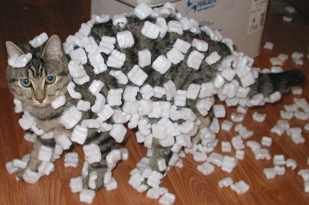
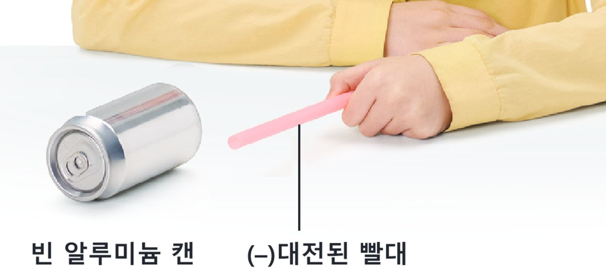

전기를 띠지 않은 금속에 대전체를 가까이 하면?

고양이 털이 마찰하여 전기를 띠자 스티로폼 조각들이 털에 달라붙었어요. 그렇다면 금속으로 된 캔은 어떨까요?
털가죽으로 문지른 플라스틱 빨대는 (−)전하를 띠어요. 이 빨대를 마찰하지 않은 빈 알루미늄 캔에 닿지 않게 가까이 가져가요.
- 같은 종류의 전하 사이에는 서로 밀어 내는 전기력, 다른 종류의 전하 사이에는 서로 끌어당기는 전기력이 작용한다.
- 원자에는 (+)전하를 띤 원자핵과 (−)전하를 띤 전자가 있고, 두 전하의 양이 같아 전기적으로 중성이다.
대전체를 가까이 한 알루미늄 캔 관찰하기

- 책상 위에 빈 알루미늄 캔을 눕혀 놓는다.
- 빨대를 털가죽으로 여러 번 마찰한다.
- 마찰하여 (−)전하로 대전된 빨대를 빈 알루미늄 캔에 가까이 한다. 이때 빨대와 캔을 나란히 하고, 빨대가 캔에 닿지 않게 한다.
관찰 결과 알루미늄 캔은 어떻게 되었나요?
(−)전하를 띤 빨대를 가까이 할 때 빈 알루미늄 캔에서 빨대와 가까운 부분은 어떤 전하를 띠는지 전기력과 관련지어 이야기해 보자.
예시 답안
빈 알루미늄 캔이 (−)전하를 띤 빨대에 의해 끌어당기는 방향의 전기력을 받았으므로, 빨대와 가까운 부분은 (+)전하를 띤다. 왜 (+)전하를 띠게 되었는지는 ③의 전자 이동 모형으로 확인해 봅시다.
캔 속에서 무슨 일이 일어날까?
막대를 끌거나 아래 조절 막대로 대전체를 캔에 가까이 해 보세요. ⊕ 원자핵과 ⊖ 전자 중 무엇이 움직이나요?
- ☐ (−)대전체를 캔 가까이 가져가기
- ☐ (+)대전체를 캔 가까이 가져가기
※ 원자핵과 전자의 수·크기는 이해를 돕기 위해 아주 간단히 나타낸 것이에요. 실제 캔에는 셀 수 없이 많은 원자가 있어요.
- (−)대전체를 가까이 하면 전자는 대전체에서 먼 쪽과 가까운 쪽 중 어디로 이동하나요?
- 대전체와 가까운 쪽에도 전자가 남아 있나요? 그런데도 왜 (+)전하를 띨까요?
- 캔 전체의 전자 수는 달라졌나요? 대전체를 다시 멀리 하면 어떻게 되나요?
예시 답안
1. 같은 종류의 전하 사이에는 밀어 내는 전기력이 작용하므로, 전자는 (−)대전체에서 먼 쪽으로 이동한다.
2. 남아 있다. 하지만 (−)전하의 양이 (+)전하의 양보다 적어져서 (+)전하를 띤다.
3. 전체 전자 수는 그대로이다. 대전체를 멀리 하면 전자가 다시 고르게 퍼져 어느 쪽도 전하를 띠지 않는다.
정전기 유도: 전기를 띠지 않은 물체에 대전체를 가까이 할 때, 대전체와 가까운 쪽은 다른 종류의 전하를 띠고 먼 쪽은 같은 종류의 전하를 띠는 현상
금속에는 비교적 자유롭게 움직일 수 있는 전자가 많다. 정전기 유도가 일어날 때 원자핵은 움직이지 않고 전자만 이동한다.
더 알아보기: 종이나 고무처럼 금속이 아닌 물체는?
대전된 풍선에 종잇조각이 달라붙는 것도 정전기 유도예요. 종이에는 자유롭게 이동하는 전자가 거의 없지만, 원자 안에서 전자가 한쪽으로 치우쳐요.
전하 모형 완성하기
캔에는 원자핵 8개와 전자 8개가 있어요. 버튼으로 전자만 옮겨 세 가지 경우를 나타내 보세요. 세 번째는 빨대를 문지른 털가죽을 가까이 한 경우예요.
스스로 확인하기
예시 답안
털가죽은 (+)전하로 대전된다. (+)전하를 띤 털가죽을 캔에 가까이 하면 캔의 전자가 털가죽과 가까운 쪽으로 이동한다. 그 결과 가까운 쪽이 (−)전하를 띠게 되어 캔이 털가죽 쪽으로 끌려온다.
공기 청정기 필터에 미세 먼지가 달라붙는 까닭은?
공기 청정기의 필터는 대전되어 있어요. 오늘 배운 내용으로 설명해 봅시다.
예시 답안
전기를 띠지 않은 미세 먼지가 대전된 필터 가까이 지나가면 정전기 유도가 일어나, 필터와 가까운 쪽이 필터와 다른 종류의 전하를 띤다. 따라서 끌어당기는 전기력을 받아 필터에 달라붙는다.
수업 흐름 (45분)
| 단계 | 시간 | 활동 |
|---|---|---|
| ① 생각 열기 | 5분 | 예상 → 우리 반 예상 확인 |
| ② 실험 | 8분 | 빨대와 알루미늄 캔 관찰 |
| ③ 모형 탐구 | 12분 | 전자의 이동 관찰 → 정전기 유도 개념 |
| ④ 모형 완성 | 10분 | 세 가지 경우의 전하 분포 나타내기 |
| ⑤ 확인 문제 | 6분 | 6문항, 사고력 |
| ⑥ 정리 | 4분 | 미세 먼지가 달라붙는 까닭 |